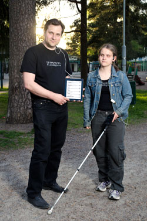

Apps4Finland
avoimen datan innovaatiokilpailu vuonna 2013
Projektipäällikkö Petri Kola / @pe3
esityksen versio 0.9 (31.5.2013)
jokavuotinen
avoimen datan innovaatio- kilpailu
Järjestäjät: Verkkodemokratiaseura ja Forum Virium Helsinki
avoin data
ilmaista raaka-ainetta liiketoimintaan
tietovallan jakamista demokratian aktivoimiseen
keino hallinnon tehostamiseen
hallinto edelläkävijänä
Valtion avoimen tiedon ohjelma
Helsinki Region Infoshare
Open Data Tampere Region
lisää aiheesta

...mutta
aktiivien mielestä
suomenmestaruus

joka pitää voittaa!
kilpailu uudistuu
2009-2010
datan avaamisen kannustaminen
2011-2012
datan käytön tukeminen
2013
kisasta
mekanismi
isojen
ongelmien ratkomiseen
pala palalta
kilpailussa on
syntynyt
tekemiseen innostavia töitä
Helsinki Public Transport Visualized
näyttää mitä avautuva paikkatieto mahdollistaa
lisäksi kilpailussa on syntynyt
ratkaisuja
suomalaisten
ongelmiin
BlindSquare
Miten helpottaa näkövammaisten liikkumista?
Veropuu

Miten nopeuttaa budjettien hahmottamista?
Espoon auringonvalo- ja maalämpökartta

Datalla voi tukea muiden ongelmaan tarttumista
Datapohjaiset ratkaisut
skaalautuvat
ja ovat parhaimmillaan todella hyviä investointeja
Joukkoliikenteen kehittäminen Reittioppaan dataa avaamalla
“Vaikea kuvitella miten olisimme itse saaneet aikaiseksi tällaisen palvelutason nousun näillä resursseilla. Jos olisimme alkaneet tehdä kännykkäsovelluksia itse, rahaa olisi mennyt helposti 50 000 euroa per sovellus”
Jari Honkonen / HSL